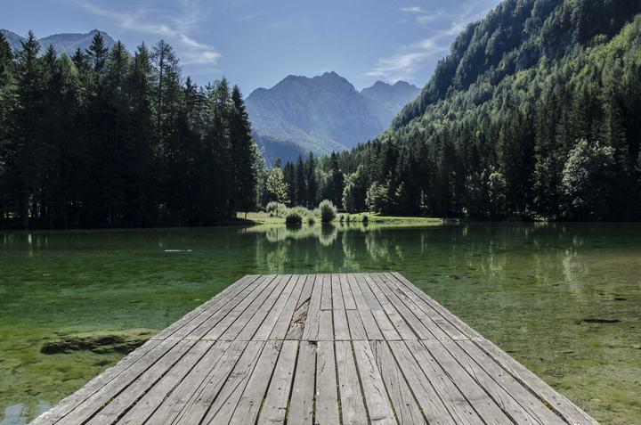

12A
iPhone HEIC, decoded here
Proton serves no preview for HEIC. Proton Faces decodes the original locally and makes its own thumbnail.
Proton Faces turns your end-to-end encrypted Proton Photos into a searchable archive of faces, places, objects and words. Every model runs on your own machine, and nothing is ever written back.
Proton Photos are end-to-end encrypted: only your devices can see them, so only your devices can search them. Proton Faces is the camera body you run next to your library. Light comes in. Nothing goes out.
Your library, end-to-end encrypted, where it already lives.
The only part that talks to Proton. Read-only: no uploads, no writes, no deletions.
RetinaFace + ArcFace for faces, CLIP for free text, HDBSCAN for people, offline reverse-geocoding. CPU only.
One 512 px WebP thumbnail per photo. Originals stream from Proton on demand and are never kept.
:8080Search, people, places, albums. Installable PWA with light and dark themes.
No telemetry. No cloud APIs. No account with us.
Turn the dial. Who is in it, who looks like this, what is in it, where it was taken: the same questions you would ask Google Photos, answered by models on your own box.
RetinaFace finds each face, ArcFace turns it into an embedding, HDBSCAN clusters the embeddings into persons. Name one face and every look-alike gets the tag.
Portraits from the demo library (Wikimedia Commons, see credits).
Search by example: upload one photo, and Proton Faces ranks every indexed face by ArcFace similarity. Anything under your threshold stays out.
Scores illustrative. Upload is capped at 8 MB and 50 megapixels.
Zero-shot CLIP ranks every photo against your words. No tags to maintain, no labels to train.
Demo-library photos (Unsplash). Rankings illustrative.
Coordinates come out of each photo's metadata and are reverse-geocoded offline. The app plots them on an interactive world map.
Coordinates shown are the real locations of the pictured landmarks.
The rest of what a photo library needs, built for one owner or one family on one install.
Proton serves no preview for HEIC. Proton Faces decodes the original locally and makes its own thumbnail.

13AYour Proton albums come across; local tags stay yours and never touch Proton.
Pixel-identical copies side by side, hide the extras in one click.
Faces that did not cluster yet, waiting to be named in bulk.
Look-alike person clusters proposed for review, merged only when you say so.
Per user, so each family member keeps their own picks.
Installable PWA with an offline app shell and a real mobile layout.
Detected and counted, kept out of photo grids until a preview exists.
Read, write and admin roles, optional TOTP, rate-limited login.
Snapshot the index from the admin area. Your photos stay in Proton.
Scroll the roll
The short film is drawn frame by frame in JavaScript on a canvas, in English and French. Pause it, scrub it, link to any second.
Look around the hosted demo, or run the same fixture on your own machine with one compose command. No Proton account needed for either.
A running instance with a curated library of free CC0 and Unsplash photos.
Demo mode swaps the Proton bridge for the bundled fixture. Sign in at localhost:8080 with demo / proton-faces.
$ git clone https://github.com/mmornati/proton-faces.git $ cd proton-faces $ docker compose --profile demo up -d # open http://localhost:8080